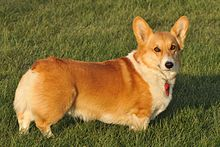

Welsh Corgis have historically been used as herding dogs, specifically for cattle. They are of the type of herding dog referred to as "heelers", meaning that they would nip at the heels of the larger animals to keep them on the move.[5] Both Pembrokeshire and Cardigan were historically agricultural areas of Wales.[6] The combination of the low height off the ground and innate agility of Welsh Corgis would allow them to avoid the hooves of cattle.[5] The term "corgi" means either cur dog or dwarf dog in the Welsh language, which was not intended as an insult to the dog's means, rather as a purely descriptive term.[6] There is also a folk legend that says corgis were a gift from the woodland fairies, and that the breed's markings were left on its coat by fairy harnesses and saddles.[7]
The geographical distance between the two areas of which the modern breeds are named, may have resulted in separate evolution of the breeds.[8] Different tales have been told of the Corgi's origin, with some believing that the two modern breeds expected to have evolved as part of a shared ancestry,[9] while others attribute the importation of the Pembroke Welsh Corgi to Flemish weavers from around the 10th century.[10] Further theories on the origin of the Pembroke variety suggest that they may have originated from central European herding breeds from the area around modern Germany. Depending on the time period that these dogs were imported to Wales, they could have been either the extinct Deutsches Brachen, or the Dachshund breed.[8]
The Cardigan Welsh Corgi has been attributed to the influences of Nordic settlers in the region.[11] Dogs of similar dimensions exist in modern Scandinavia, called the Swedish Vallhund,[12] and it is claimed by some historians that these two breeds share a common ancestor.[13] Farmers in Cardigan began to switch from cattle to sheep in the late 19th century, but the existing breed was unsuited to working the sheep flocks. Crosses began to take place with the Welsh Sheepdog, and this is where the merle colour pattern originated from in the breed. The subsequent similarities between the two types of Welsh Corgis have been attributed to cross breeding between the two, or simply selected breeding from farmers who wished to have the Cardigan variety appear closer in nature to the Pembroke breed.[13]
The first recorded date for corgis appearing in the show ring in Wales is 1925. Captain J.P. Howell called together a meeting of breeders of both the Pembroke and the Cardigan varieties, and formed the Welsh Corgi Club with an initial membership of 59 members. A general breed standard was drawn up, and Corgis began to appear in conformation shows. Until this point, neither breed had been specifically bred for looks. They were primarily interested in the Pembroke variety, although those from Cardigan did also appear. At this point the breeds were referred to as the Pembrokeshire and Cardiganshire varieties, later becoming shortened as time passed. There were a number of rows between breeders of the two types in early shows, as judges who were breeders of one type would often favour them in deciding who won in certain classes.[14] The Welsh Corgi appeared at Cruft's for the first time in 1927.[15]
The first Championship was granted at a Cardiff show in 1928, with the prize awarded to a red and white Pembroke bitch named Shan Fach. The breeds continued to be judged together until 1934, when The Kennel Club recognised each breed separately. In that initial registration, some 59 Cardigans and 240 Pembrokes were listed in the pedigree books. The decisions about which breed each dog formed part of was left to the owners on some occasions, who had the freedom to choose whichever they felt was the most appropriate.[14] The first dog to be named Best in Show at an open conformation show was Ch. Bowhit Pivot.[16]